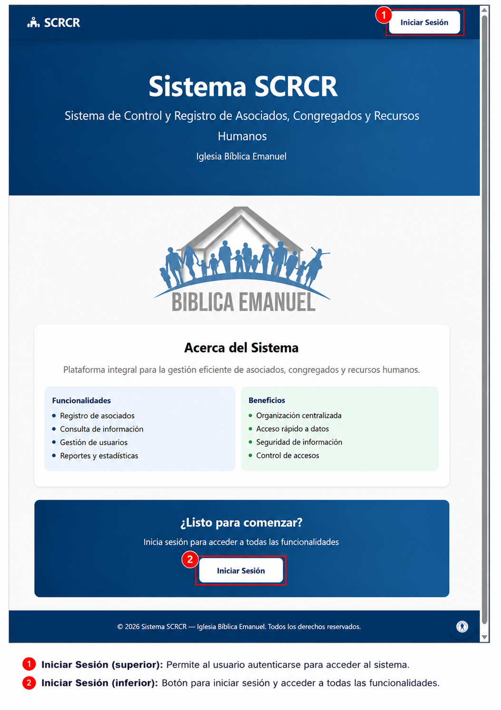

Sistema SCRCR
Bienvenida
Bienvenido a SCRCR - Sistema de Control y Registro de Asociados, Congregados y Recursos Humanos
Iglesia Bíblica Emanuel
Este sistema fue desarrollado para optimizar la gestión integral de los miembros, eventos y recursos humanos de la Iglesia Bíblica Emanuel, proporcionando herramientas modernas y seguras para centralizar la información y facilitar la toma de decisiones.
Acerca del Sistema
SCRCR es una plataforma integral diseñada para modernizar y simplificar la administración de:
- Asociados y Congregados: Control completo de información de miembros activos
- Eventos Religiosos: Organización de cultos, reuniones y actividades especiales
- Recursos Humanos: Gestión de empleados, nómina y permisos
- Reportes y Estadísticas: Análisis detallado del crecimiento y actividades
Objetivos Principales
- Centralizar toda la información de la iglesia en una plataforma segura
- Mejorar la eficiencia administrativa y operativa
- Facilitar la toma de decisiones con reportes precisos
- Garantizar la seguridad y confidencialidad de los datos
- Permitir una comunicación clara entre los diferentes roles de la iglesia
Funcionalidades
- Registro y consulta de asociados y congregados
- Gestión de eventos y asistencias
- Administración de usuarios y roles con permisos granulares
- Generación automática de nómina y reportes
- Sistema de permisos y ausencias
- Creación y registro de actas oficiales
- Configuración flexible según necesidades
Beneficios
- Organización centralizada y actualizada
- Acceso rápido a datos desde cualquier lugar
- Seguridad de información con control de accesos
- Reducción de tiempo en tareas administrativas
- Reportes automáticos y precisos
- Mejora en la toma de decisiones estratégicas
Estructura de la Guía
Esta guía de usuario te orientará en el uso de los principales módulos del sistema SCRCR:
Módulos Principales
- Acceso al Sistema - Cómo iniciar sesión y gestionar tu acceso
- Roles de Usuario - Definición de roles y permisos del sistema
- Menú Principal - Panel principal y navegación
- Listado de Asociados - Búsqueda, consulta y gestión de asociados
- Congregados - Registro y gestión de congregados de la iglesia
- Eventos - Creación y administración de eventos
- Gestión de Usuarios - Administración de usuarios del sistema
- Planilla - Generación y gestión de nómina
- Reportes - Reportes y estadísticas del sistema
- Permisos - Gestión de permisos de ausencia
- Actas - Registro de actas de reuniones
- Configuración - Ajustes de cuenta y preferencias
Roles del Sistema
Roles Disponibles:
- Administrador: control general, usuarios, roles y auditoría
- Asistente: operación administrativa diaria
- Pastor: consulta información institucional y aprobación de solicitudes
- Tesorero: empleados, planilla y reportes
- Presidente: actas y documentación institucional
El acceso a cada módulo depende del rol y los permisos asignados.
Cómo Usar Esta Guía
- Selecciona el módulo que deseas consultar desde la navegación lateral
- Sigue las instrucciones paso a paso para realizar tareas habituales
- Utiliza las imágenes de referencia para familiarizarte con la interfaz
- Consulta las secciones específicas para funcionalidades avanzadas
Recomendaciones
- Mantén tu contraseña segura
- Revisa regularmente los reportes disponibles
- Utiliza los filtros para búsquedas más precisas
- Realiza respaldos periódicos de información importante
Esta guía está orientada a usuarios finales del SCRCR con responsabilidad en la gestión de asociados, congregados, recursos humanos y reportes.
¿Listo para comenzar?
Inicia sesión para acceder a todas las funcionalidades
